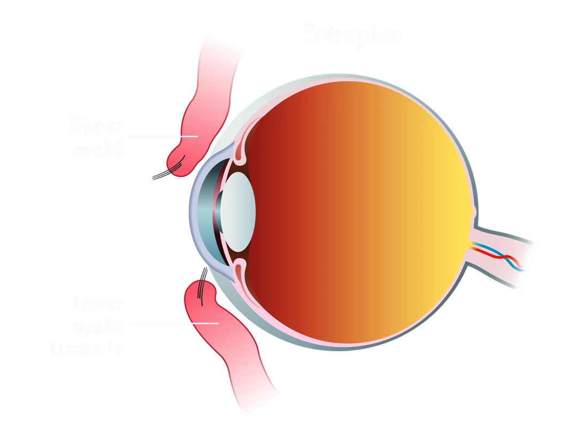
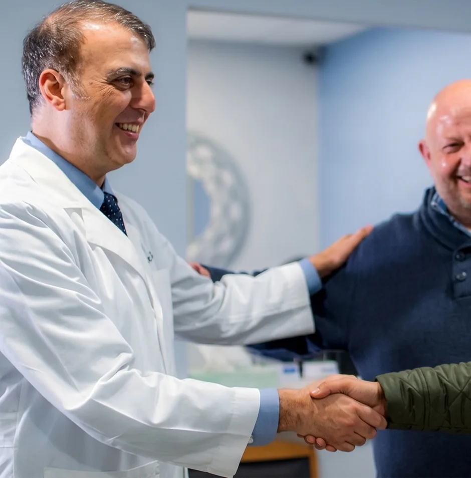
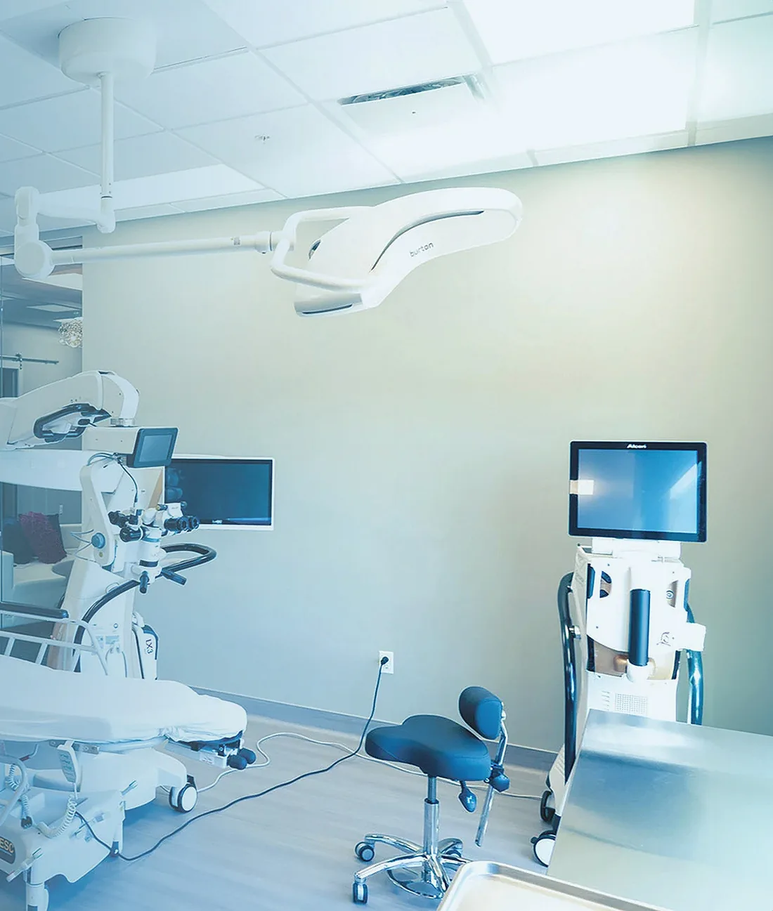

Protect your eye from an inward-turning eyelid
Entropion causes the eyelid to turn inward, allowing the lashes to rub against the eye and irritate the cornea. Dr. Wesam Silk evaluates and treats entropion in Annandale and Manassas.
Dr. Wesam SilkBoard-certified ophthalmologist and fellowship-trained cornea specialist
What is entropion?
Entropion is an eyelid malposition in which the eyelid rolls inward instead of resting normally against the eye.
When this happens, the eyelashes and eyelid margin may repeatedly scrape the cornea and surrounding eye surface. Some patients experience intermittent irritation at first. Others feel as though an eyelash, grain of sand, or foreign object is constantly trapped in the eye.
Because entropion can affect the cornea, persistent symptoms should be evaluated by an ophthalmologist. Entropion repair may be recommended to correct the eyelid position.

Common symptoms
Symptoms may worsen when blinking, squeezing the eyelids, or spending time in wind or dry conditions.
Eyelashes rubbing against the eye
- A scratching or gritty sensation
- Redness and irritation
- Excessive tearing
- Eye pain or soreness
- Light sensitivity
- Mucus or discharge
- Blurred vision caused by tearing or inflammation
- Recurrent corneal irritation
Why entropion should not be ignored
The cornea is the clear front surface of the eye and plays an essential role in focusing vision.
When eyelashes repeatedly rub against the cornea, they can cause abrasions, inflammation, infection, and in advanced cases, corneal ulceration or vision damage.
An evaluation can determine whether the cornea is already irritated and whether temporary protection or entropion surgery is appropriate.
What causes entropion?
The most common cause is age-related weakening and stretching of the tissues that support the eyelid. Other potential causes include:
- Loose or stretched lower eyelid tissue
- Muscle imbalance around the eye
- Scarring from injury, inflammation, or prior surgery
- Chronic eye irritation or infection
- Certain neurological or muscular conditions
- Congenital eyelid abnormalities, which are less common
Identifying the cause matters because the appropriate treatment depends on the eyelid’s anatomy, stability, and effect on the eye.
How Dr. Silk evaluates entropion
During an eyelid evaluation, Dr. Silk examines both the eyelid and the ocular surface.
The examination may assess
- Upper and lower eyelid position
- Eyelid looseness and support
- Whether the eyelashes touch the eye
- Corneal scratches or inflammation
- Tear-film and ocular-surface health
- Changes in eyelid position during blinking
- Previous eye surgery, injury, or scarring
This examination also helps distinguish entropion from trichiasis, dry eye disease, blepharitis, and other conditions that may produce similar symptoms.

Entropion treatment options
Treatment is based on the cause, severity, symptoms, and condition of the cornea.
Temporary symptom relief
- Lubricating eye drops
- Eye ointment
- Protection of the corneal surface
- Treatment of associated inflammation or infection
- Temporary eyelid-positioning measures in selected cases
These measures may protect the eye or reduce discomfort, but they generally do not permanently correct an eyelid that is turning inward because of weakened or stretched tissue.
When entropion surgery may be recommended
Entropion surgery may be recommended when:
- The eyelid continues to turn inward
- Eyelashes repeatedly rub against the eye
- Lubrication does not adequately control symptoms
- Corneal irritation or damage is present
- The condition interferes with daily comfort or vision
The purpose of entropion repair is to return the eyelid to a more stable position so the lashes and eyelid margin no longer rub against the eye.
Depending on the underlying cause, treatment may involve tightening, repositioning, or reinforcing the tissues that support the eyelid.

What to expect from entropion repair
Entropion repair is a functional eyelid procedure intended to protect the eye and restore a healthier eyelid position.
During your consultation, Dr. Silk will explain
- Why the eyelid is turning inward
- Whether the cornea is being affected
- Which treatment options are appropriate
- Whether surgery is recommended
- What the procedure may involve
- Expected recovery and follow-up care
- Risks or medical considerations specific to you
There is no single procedure that is right for every patient. The surgical approach should match the cause and anatomy of the eyelid problem.
Recovery after entropion surgery.
Recovery varies based on the procedure and the patient’s overall health.
Temporary swelling, bruising, tightness, tenderness, or mild discomfort may occur around the eyelid. Patients receive specific instructions concerning medication, eye protection, activity limits, incision care, and follow-up visits.
Dr. Silk will explain what to expect based on the repair recommended for you.
Ready to discuss your recovery?
Why choose Dr. Silk?
Dr. Wesam Silk is a board-certified ophthalmologist and fellowship-trained cornea specialist.
Wesam Silk, M.D.
Board-certified ophthalmologist
Fellowship-trained cornea specialist
- 26,000+
- eye surgeries performed
- 20+ years
- serving Northern Virginia
His experience evaluating the cornea and ocular surface is particularly relevant for patients with entropion because treatment must address both the eyelid position and any damage or irritation affecting the eye.
At Silk Vision & Surgical Center, your evaluation is based on the cause of the condition, the health of your eye, and the treatment most likely to restore comfort and protect vision.
Meet Dr. SilkEntropion vs. ectropion
Entropion and ectropion are opposite eyelid-position problems.
| Compare | Entropion | Ectropion |
|---|---|---|
| Eyelid position | The eyelid turns inward | The lower eyelid turns outward |
| Common symptoms | Scratching, redness, tearing, pain | Watery eyes, dryness, exposure, irritation |
| Primary concern | Eyelashes rubbing against the cornea | Poor tear drainage and eye-surface exposure |
If your lower eyelid turns outward or pulls away from the eye, learn more about ectropion treatment in Northern Virginia
Frequently asked questions
Call or text (703) 876-9700What is entropion?
Entropion is an eyelid condition in which the eyelid turns inward. This allows the eyelashes or eyelid margin to rub against the eye and may cause irritation, tearing, redness, pain, or corneal damage.
Why does my eyelid turn inward?
The most common cause is age-related weakening and stretching of the eyelid tissues. Scarring, previous surgery, chronic inflammation, injury, or muscle imbalance may also contribute.
Why do my eyelashes feel like they are scratching my eye?
An inward-turning eyelid can cause the lashes to scrape the eye whenever you blink. Misdirected eyelashes, known as trichiasis, can cause similar symptoms, so an examination is needed to identify the cause.
Can entropion damage the cornea?
Yes. Repeated rubbing may cause corneal abrasions, inflammation, infection, ulceration, or vision problems. The risk depends on the severity and duration of the condition.
Can eye drops correct entropion?
Lubricating drops or ointment may reduce friction and provide temporary relief, but they do not usually correct a structural eyelid-position problem.
Does entropion always require surgery?
Not every patient requires immediate surgery. Treatment depends on the cause, severity, symptoms, and health of the cornea. Structural entropion commonly requires repair for lasting correction.
What happens during entropion repair?
The specific procedure depends on the cause. Repair may involve tightening, repositioning, or reinforcing the tissues that support the eyelid.
Is entropion repair an outpatient procedure?
Many eyelid repairs are performed on an outpatient basis. Dr. Silk will determine the appropriate setting based on the procedure and the patient’s medical needs.
How long does recovery take?
Recovery differs by procedure and patient. Temporary swelling, bruising, tightness, and mild discomfort are common. Dr. Silk will provide individualized recovery and follow-up instructions.
Schedule an entropion evaluation
If your eyelid turns inward or your eyelashes are rubbing against your eye, schedule an evaluation before ongoing irritation causes further damage.
Silk Vision & Surgical Center evaluates eyelid conditions for patients from Annandale, Manassas, Fairfax, Alexandria, Arlington, Falls Church, Vienna, Tysons, McLean, Washington, DC, and communities throughout Northern Virginia.